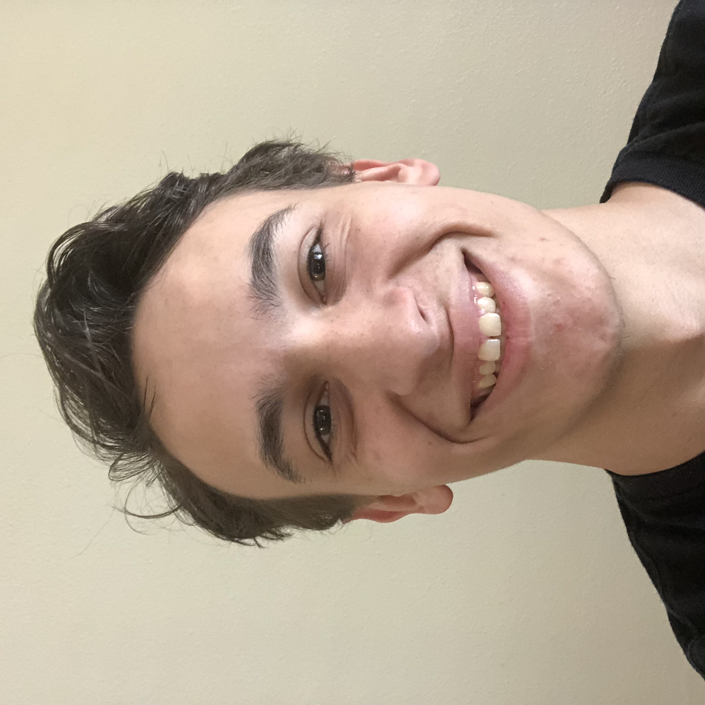

About Me

My name is Dawson Hamilton and I am 20 years old. I live in Murray Utah. I used to live with my parents in West Valley with my parents until I moved out. I'm currently attending the University of Utah coding boot camp trying to learn how to become a computer programmer. I attended the American Internation School of Utah and graduated in 2017. After highschool I decided to try and get my firefighter certifications and passed that with flying colors but decided that I didn't want to be an EMT. After that I looked into other things that I was into like music development, soccer, video games... I decided to go with computer programming because I took a class in highschool and really enjoyed it.
I currently work at Cracker Barrel as a full time server and hope to leave there as soon as possible. In my free time I love to play video games like Rainbow Six Siege, Destiny 2, Overwatch... I also love to watch videos on Youtube, hang out with my freinds from high school, and play lots and lots of DnD. I would really love to become a video game designer when I'm done with this class to design a game of my own. A couple fun facts about me is that I am certified to be a fire fighter but don't enjoy being a EMT so that is why I am here. Also, I have a daughter that was just born Oct. 21st of 2019 and couldn't be happier!